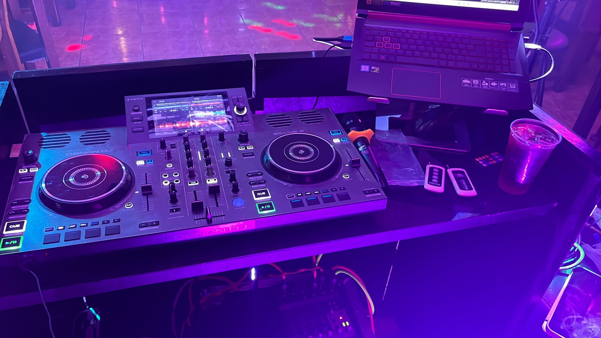
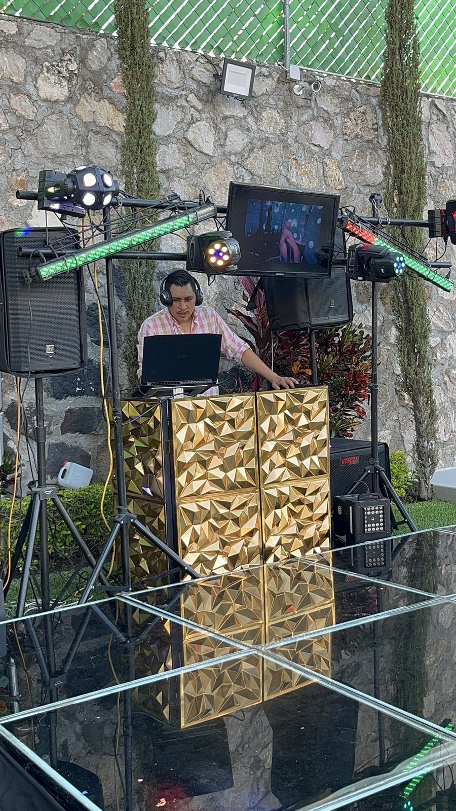
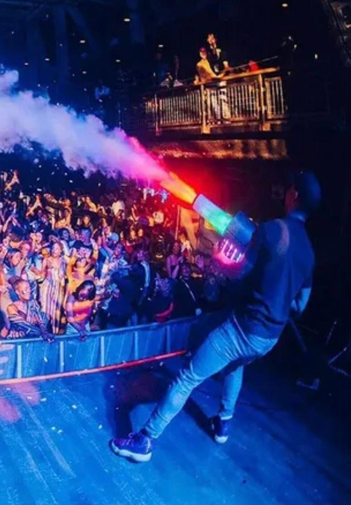
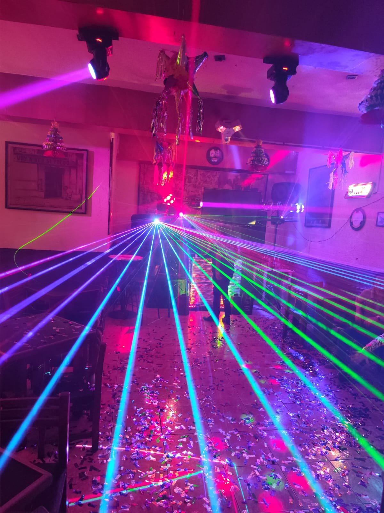
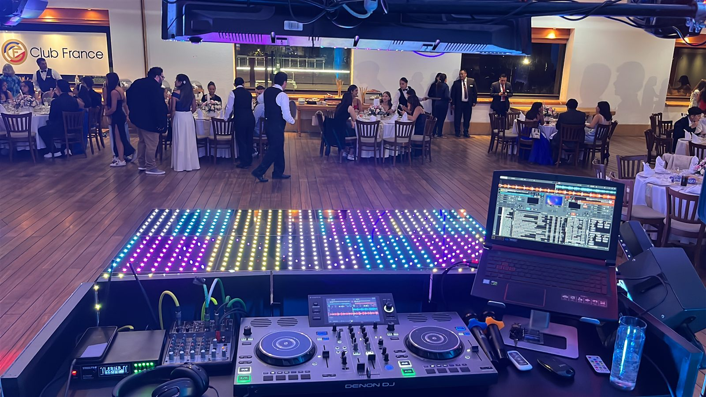

Cabina premium para evento social
Montaje elegante con cabina dorada, iluminación decorativa y equipo de sonido preparado para ambientar espacios abiertos.
Explora montajes reales, cabinas, iluminación y momentos de pista para imaginar cómo puede lucir tu celebración.
Cada referencia muestra diferentes estilos de montaje, ambientes con luces y equipo profesional para eventos sociales y privados.

Montaje elegante con cabina dorada, iluminación decorativa y equipo de sonido preparado para ambientar espacios abiertos.

Efectos láser y luces móviles para transformar el espacio y mantener una energía visual durante la fiesta.

Controladora, laptop y montaje técnico listos para manejar música, mezclas y transiciones durante el evento.

Adaptamos el montaje a salones, jardines y espacios familiares para que el evento conserve su propio estilo.

Referencia adicional del ambiente en evento, con luces y montaje pensado para que los invitados disfruten la pista.
Vista rápida del ambiente y la respuesta del público durante una celebración.
Ejemplo de iluminación y música trabajando juntas para elevar la experiencia del evento.